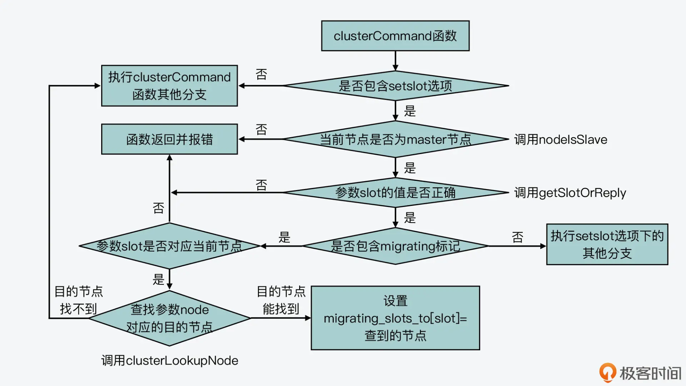

- 00 开篇词 阅读Redis源码能给你带来什么？.md
- 01 带你快速攻略Redis源码的整体架构.md
- 02 键值对中字符串的实现，用char还是结构体？.md
- 03 如何实现一个性能优异的Hash表？.md
- 04 内存友好的数据结构该如何细化设计？.md
- 05 有序集合为何能同时支持点查询和范围查询？.md
- 06 从ziplist到quicklist，再到listpack的启发.md
- 07 为什么Stream使用了Radix Tree？.md
- 08 Redis server启动后会做哪些操作？.md
- 09 Redis事件驱动框架（上）：何时使用select、poll、epoll？.md
- 10 Redis事件驱动框架（中）：Redis实现了Reactor模型吗？.md
- 11 Redis事件驱动框架（下）：Redis有哪些事件？.md
- 12 Redis真的是单线程吗？.md
- 13 Redis 6.0多IO线程的效率提高了吗？.md
- 14 从代码实现看分布式锁的原子性保证.md
- 15 为什么LRU算法原理和代码实现不一样？.md
- 16 LFU算法和其他算法相比有优势吗？.md
- 17 Lazy Free会影响缓存替换吗？.md
- 18 如何生成和解读RDB文件？.md
- 19 AOF重写（上）：触发时机与重写的影响.md
- 20 AOF重写（下）：重写时的新写操作记录在哪里？.md
- 21 主从复制：基于状态机的设计与实现.md
- 22 哨兵也和Redis实例一样初始化吗？.md
- 23 从哨兵Leader选举学习Raft协议实现（上）.md
- 24 从哨兵Leader选举学习Raft协议实现（下）.md
- 25 PubSub在主从故障切换时是如何发挥作用的？.md
- 26 从Ping-Pong消息学习Gossip协议的实现.md
- 27 从MOVED、ASK看集群节点如何处理命令？.md
- 28 Redis Cluster数据迁移会阻塞吗？.md
- 29 如何正确实现循环缓冲区？.md
- 30 如何在系统中实现延迟监控？.md
- 31 从Module的实现学习动态扩展功能.md
- 32 如何在一个系统中实现单元测试？.md
- 结束语 Redis源码阅读，让我们从新开始.md
28 Redis Cluster数据迁移会阻塞吗？
上节课，我给你介绍了 Redis Cluster 节点处理命令的过程。现在你知道，在这个过程中，节点会调用 getNodeByQuery 函数检查访问的 key 所属的节点，如果收到命令的节点并不是 key 所属的节点，那么当前节点就会生成 CLUSTER_REDIR_MOVED 或者 CLUSTER_REDIR_ASK 的报错信息，并给客户端返回 MOVED 或 ASK 命令。
其实，这两个报错信息就对应了 Redis Cluster 的数据迁移。数据迁移是分布式存储集群经常会遇到的一个问题，当集群节点承担的负载压力不均衡时，或者有新节点加入或是已有节点下线时，那么，数据就需要在不同的节点间进行迁移。所以，如何设计和实现数据迁移也是在集群开发过程中，我们需要考虑的地方。
那么今天这节课，我就来介绍下 Redis Cluster 是如何实现数据迁移的。从源码层面掌握这部分内容，可以帮助你了解数据迁移对集群节点正常处理命令的影响，这样你就可以选择合适时机进行迁移。而且，掌握 Redis 的数据迁移实现，也能为你自己开发集群提供一个不错的参考示例。
好了，接下来，我们就先来看下和数据迁移相关的主要数据结构。这些数据结构比较重要，它们记录了数据迁移的状态信息。
记录数据迁移的数据结构
首先你要知道，Redis Cluster 是先把键值对映射到哈希槽（slots）中，然后通过给不同集群节点分配 slots 这样的方法，来完成数据在集群节点间的分配的。关于这部分的知识，你也可以去看看第一季的【第 9 讲】。
那么，在源码实现层面，Redis Cluster 的每个集群节点都对应了一个 clusterNode 的结构体（在cluster.h文件中）。这个结构体中包含了一个 char 类型的数组，用来记录当前节点在负责哪些 slots。
这个数组的定义如下所示，它的长度是宏定义 CLUSTER_SLOTS 除以 8，而 CLUSTER_SLOTS 宏定义的值是 16384，表示的是 Redis Cluster 的 slots 总个数。这个值除以 8 之后，就意味着数组每个元素的每一位表示 1 个 slot。如果数组元素某一位的值是 1，那么就表明当前节点负责这一位对应的 slot。
typedef struct clusterNode {
…
unsigned char slots[CLUSTER_SLOTS/8]
…
}
但是，如果只是用 clusterNodes 中的 slots 数组，并不能记录数据迁入迁出的情况，所以，Redis Cluster 针对整个集群设计了 clusterState 结构体（在 cluster.h 文件中）。这个结构体中包含了三个 clusterNode 类型的数组和一个 rax 类型的字典树。这三个数组的大小，都是集群 slots 的总个数 16384，如下所示：
typedef struct clusterState {
...
clusterNode *migrating_slots_to[CLUSTER_SLOTS];
clusterNode *importing_slots_from[CLUSTER_SLOTS];
clusterNode *slots[CLUSTER_SLOTS];
rax *slots_to_keys;
...
}
这几个结构主要是被用来记录数据迁入迁出的情况，它们的含义如下。
- migrating_slots_to 数组：表示当前节点负责的 slot 正在迁往哪个节点。比如，migrating_slots_to[K] = node1，这就表示当前节点负责的 slot K，正在迁往 node1。
- importing_slots_from 数组：表示当前节点正在从哪个节点迁入某个 slot。比如，importing_slots_from[L] = node3，这就表示当前节点正从 node3 迁入 slot L。
- slots 数组：表示 16384 个 slot 分别是由哪个节点负责的。比如，slots[M] = node2，这就表示 slot M 是由 node2 负责的。
- slots_to_keys 字典树：用来记录 slot 和 key 的对应关系，可以通过它快速找到 slot 上有哪些 keys。
好了，知道了用来记录数据迁入迁出情况的数据结构之后，我们就来学习数据迁移的具体过程。
数据迁移过程的设计与实现
Redis Cluster 迁移数据的整个过程可以分成五个大步骤，分别是：
- 标记迁入、迁出节点；
- 获取迁出的 keys；
- 源节点实际迁移数据；
- 目的节点处理迁移数据；
- 标记迁移结果。
下面，我们就分别来看下这五个步骤的源码实现。
标记迁入、迁出节点
在 Redis Cluster 中迁移数据时，我们需要先使用 CLUSTER SETSLOT 命令，在待迁入数据的目的节点上标记待迁出数据的源节点，使用的命令如下所示：
CLUSTER SETSLOT <slot> IMPORTING <node> //<slot>表示要迁入的哈希槽，<node>表示当前负责<slot>的节点
然后，我们需要使用 CLUSTER SETSLOT 命令，在待迁出数据的源节点上标记将要迁入数据的目的节点，使用的命令如下所示：
CLUSTER SETSLOT <slot> MIGRATING <node> //<slot>表示要迁出的哈希槽，<node>表示<slot>要迁往的目的节点
为了便于你理解，我来举个例子。假设 slot 3 在节点 A 上，现在我们要把 slot 3 从节点 A 上迁移到节点 B 上，那么，此时节点 A 就是待迁出数据的源节点，而节点 B 就是待迁入数据的目的节点。我们要先在节点 B 上执行如下命令，用来标记源节点。
CLUSTER SETSLOT slot3 IMPORTING nodeA
然后，我们在节点 A 上执行如下命令，用来标记目的节点。
CLUSTER SETSLOT slot3 MIGRATING nodeB
对于 CLUSTER 命令来说，它的处理函数是 clusterCommand（在cluster.c文件中）。在这个函数中，它会根据 CLUSTER 命令携带的不同选项，执行不同的代码分支。因此，对于刚才介绍的标记 slot 迁入、迁出的 SETSLOT 选项，它们在 clusterCommand 函数中对应的代码分支如下所示：
void clusterCommand(client *c) {
…
//处理SETSLOT选项
else if (!strcasecmp(c->argv[1]->ptr,"setslot") && c->argc >= 4) {
…
//处理migrating标记
if (!strcasecmp(c->argv[3]->ptr,"migrating") && c->argc == 5) {
...
}//处理importing标记
else if (!strcasecmp(c->argv[3]->ptr,"importing") && c->argc == 5) {
…
}
}
这里，我们来看一下处理 migrating 和 importing 标记的具体逻辑。其实，clusterCommand 函数对这两个标记的处理逻辑基本都是分成三步。
第一步，对于数据迁出来说，该函数会判断迁出的 slot 是否在当前节点；而对于数据迁入来说，该函数会判断迁入的 slot 是否在当前节点。如果迁出的 slot 不在当前节点，或者迁入的 slot 已在当前节点，那么 clusterCommand 函数就返回报错信息了。这是因为，在这两种情况下节点无法执行 slot 迁移。
第二步，如果迁出的 slot 在当前节点，或者迁入的 slot 不在当前节点，那么，clusterCommand 函数就会调用 clusterLookupNode 函数（在 cluster.c 文件中），来查询 CLUSTER SETSLOT 命令中包含的。这主要是依赖于 clusterLookupNode 函数根据输入的节点 ID，在全局变量 server 的 cluster->nodes 数组中，查找并返回对应节点。
第三步，clusterCommand 函数会把 migrating_slots_to 数组中迁出 slot，或者 importing_slots_from 数组中迁入 slot 对应的节点，设置为 clusterLookupNode 函数查找的结果。
我也画了两张图，分别展示了 clusterCommand 函数处理 CLUSTER SETSLOT 命令的 migrating 和 importing 标记的基本逻辑，你可以再看下。

处理migrating标记

处理importing标记
这样一来，当在 Redis Cluster 中标记完迁入和迁出的节点后，我们就可以使用 CLUSTER GETKEYSINSLOT 命令，来获取要迁出的 keys 了。下面我们来看下这步操作的实现。
获取待迁出的 keys
我们用来获取待迁出的 keys 的具体命令如下所示，其中表示要迁移的 slot，而表示要迁移的 key 的数量。
CLUSTER GETKEYSINSLOT <slot> <count>
因为这里我们用的还是 CLUSTER 命令，所以，获取待迁出 keys 的命令处理也还是在 clusterCommand 函数中，对应了 GETKEYSINSLOT 选项的代码分支，如下所示：
void clusterCommand(client *c) {
…
//处理GETKEYSINSLOT选项
else if (!strcasecmp(c->argv[1]->ptr,"getkeysinslot") && c->argc == 4) {...}
...
这个代码分支的处理逻辑也比较简单，它主要可以分成三步。
首先，这个代码分支会调用 getLongLongFromObjectOrReply 函数（在object.c文件中），从 CLUSTER GETKEYSINSLOT 命令中获取和参数，这里的参数会被赋值给 maxkeys 变量，如下所示：
//解析获取slot参数
if (getLongLongFromObjectOrReply(c,c->argv[2],&slot,NULL) != C_OK)
return;
//解析获取count参数，赋值给maxkeys
if (getLongLongFromObjectOrReply(c,c->argv[3],&maxkeys,NULL)!= C_OK)
return;
然后，clusterCommand 函数会调用 countKeysInSlot 函数（在db.c文件中），获取待迁移 slot 中实际的 key 的数量。如果刚才从命令中获取的 key 的迁移数量 maxkeys，大于实际的 key 数量，那么 maxkeys 的值会被更新为实际的 key 数量。紧接着，clusterCommand 函数会给这些 key 分配空间。
unsigned int keys_in_slot = countKeysInSlot(slot); //获取迁移slot中实际的key数量
if (maxkeys > keys_in_slot) maxkeys = keys_in_slot; //如果实际的key数量小于maxkeys，将maxkeys更新为时间的key数量
keys = zmalloc(sizeof(robj*)*maxkeys); //给key分配空间
最后，这个代码分支会调用 getKeysInSlot 函数（在 db.c 文件中），从迁移 slot 中获取实际的 key，并将这些 key 返回给客户端，如下所示：
numkeys = getKeysInSlot(slot, keys, maxkeys); //获取实际的key
addReplyMultiBulkLen(c,numkeys); //将key返回给客户端
for (j = 0; j < numkeys; j++) {
addReplyBulk(c,keys[j]);
decrRefCount(keys[j]);
}
好了，到这里，客户端就通过 CLUSTER GETKEYSINSLOT 命令，获得了一定数量的要迁移的 key。接下来，我们就要开始执行实际的迁移操作了，我们来具体看下。
源节点实际迁移数据
在实际迁移数据时，我们需要在待迁出数据的源节点上执行 MIGRATE 命令。其实，MIGRATE 命令既支持迁移单个 key，也支持一次迁移多个 key，它们的基本处理流程是相同的，都是在 migrateCommand 函数中实现的。
这里，我以一次迁移多个 key 的 MIGRATE 命令为例，这个命令的选项中包含了目的节点的 IP、端口号、数据库编号，以及要迁移的多个 key、迁移超时时间，它的格式如下所示：
MIGRATE host port "" dbid timeout [COPY | REPLACE] KEYS key1 key2 ... keyN
从这个命令中，你也可以看到，它还包括了 COPY 或 REPLACE 选项，这两个选项的含义如下。
- COPY：如果目的节点已经存在待迁移的 key，则报错；如果目的节点不存在待迁移的 key，那么就正常迁移，并在迁移后，删除源节点上的 key。
- REPLACE：无论目的节点是否存在待迁移的 key，都会正常执行迁移，并覆盖已经存在的 key。
好，了解了 MIGRATE 命令的含义后，我们就来看下 migrateCommand 函数的基本处理流程，这个函数的执行过程主要可以分成四步。
第一步，命令参数检查
migrateCommand 函数首先会检查 MIGRATE 命令携带的参数，比如是否有 COPY 或 REPLACE 标记、dbid 和 timeout 是否能正常读取等。在这一步，migrateCommand 函数如果检查到 timeout 值小于等于 0 了，它就会把 timeout 值设置为 1000 毫秒，用于迁移过程中的超时判断。
第二步，读取要迁移的 key 和 value
检查完命令参数后，migrateCommand 函数会分配两个数组 ov 和 kv，它们的初始大小等于 MIGRATE 命令中要迁移的 key 的数量。然后，migrateCommand 函数会调用 lookupKeyRead 函数（在 db.c 文件中），逐一检查要迁移的 key 是否存在。这是因为有的 key 在迁移时可能正好过期了，所以就不用迁移这些 key 了。这一步的最后，migrateCommand 函数会根据实际存在的 key 数量，来设置要迁移的 key 数量。
下面的代码展示了这一步的基本逻辑，你可以看下。
ov = zrealloc(ov,sizeof(robj*)*num_keys); //分配ov数组，保存要迁移的value
kv = zrealloc(kv,sizeof(robj*)*num_keys); //分配kv数组，保存要迁移的key
...
for (j = 0; j < num_keys; j++) {
//逐一检查要迁移的key是否存在
if ((ov[oi] = lookupKeyRead(c->db,c->argv[first_key+j])) != NULL) {
kv[oi] = c->argv[first_key+j]; //只记录存在的key
oi++;
}
}
num_keys = oi; //要迁移的key数量等于实际存在的key数量
第三步，填充迁移用的命令、key 和 value
接下来，migrateCommand 函数就开始为迁移数据做准备了。这一步骤中的操作主要包括：
- 调用 migrateGetSocket 函数（在 cluster.c 文件中），和目的节点建立连接；
- 调用 rioInitWithBuffer 函数初始化一块缓冲区，然后调用 rioWriteBulkString、rioWriteBulkLongLong 等函数（在rio.c文件中），往这个缓冲区中填充要发送给目的节点的命令、key 和 value。
下面的代码也展示了在这一步中主要填充的命令、key 和 value，你可以看下。
rioInitWithBuffer(&cmd,sdsempty()); //初始化buffer
... //往buffer中填充SELECT命令
//针对每一个要迁移的key，往buffer中填充命令、key和value
for (j = 0; j < num_keys; j++) {
//在集群模式下，填充RESTORE-ASKING命令，用来发给目的节点
if (server.cluster_enabled)
serverAssertWithInfo(c,NULL, rioWriteBulkString(&cmd,"RESTORE-ASKING",14));
...
//填充key
serverAssertWithInfo(c,NULL,rioWriteBulkString(&cmd,kv[j]->ptr,
sdslen(kv[j]->ptr)));
//填充TTL
serverAssertWithInfo(c,NULL,rioWriteBulkLongLong(&cmd,ttl));
//调用createDumpPayload函数序列化value
createDumpPayload(&payload,ov[j],kv[j]);
//填充value
serverAssertWithInfo(c,NULL, rioWriteBulkString(&cmd,payload.io.buffer.ptr,
...
}
这里，你需要注意的是，migrateCommand 函数会调用 createDumpPayload 函数（在 cluster.c 文件中）将迁移 key 的 value 序列化，以便于传输。在序列化的结果中，createDumpPayload 函数会增加 RDB 版本号和 CRC 校验和。等目的节点收到迁移数据后，也会检查这两部分内容，我稍后还会给你介绍。
当在缓冲区中填充完要发送给目的节点的命令、key 和 value 后，migrateCommand 函数就开始发送这个缓冲区中的内容了。
第四步，发送迁移用的命令和数据，并读取返回结果
migrateCommand 函数会调用 syncWrite 函数（在syncio.c文件中），把缓冲区中的内容按照 64KB 的粒度发送给目的节点，如下所示：
while ((towrite = sdslen(buf)-pos) > 0) {
towrite = (towrite > (64*1024) ? (64*1024) : towrite);
nwritten = syncWrite(cs->fd,buf+pos,towrite,timeout);
...
pos += nwritten;
}
然后，针对发送给目的节点的每个键值对，migrateCommand 函数会调用 syncReadLine 函数（在 syncio.c 文件中），读取目的节点的返回结果。如果返回结果中有报错信息，那么它就会进行相应的处理。这部分的逻辑并不复杂，但是针对各种出错情况的处理会比较多，你可以进一步阅读源码来进行学习。
//针对迁移的每个键值对，调用syncReadLine函数读取目的节点返回结果
for (j = 0; j < num_keys; j++) {
if (syncReadLine(cs->fd, buf2, sizeof(buf2), timeout) <= 0) { ...}
... //处理目的节点返回的结果
}
好了，到这里，你就了解了 MIGRATE 命令的执行基本过程，我把它执行过程的四大步骤也画在了下面的这张图中，你可以再回顾下。

其实在迁移数据的过程中，目的节点对迁移命令的处理也是迁移过程的一个重要环节。所以，下面我们就来看下，目的节点在收到 RESTORE-ASKING 命令后的处理过程。
目的节点处理迁移数据
目的节点在收到源节点发送的 RESTORE-ASKING 命令后，这个命令的实际处理函数是 restoreCommand（在 cluster.c 文件中）。这个函数的处理逻辑并不复杂，主要可以分成三步。
首先，它会解析收到的命令参数，包括是否覆盖数据的标记 replace、key 过期时间标记 ttl、key 的 LRU 标记 idletime、key 的 LFU 标记 freq。接着，它就会根据这些标记执行一系列检查。
这其中就包括，如果检测到没有 replace 标记的话，它会调用 lookupKeyWrite 函数（在 db.c 文件中），检查目的节点数据库中是否有迁移的 key，如果已经存在待迁移 key 的话，它就会返回报错信息，如下所示。此外，它还会检查 TTL 值是否小于 0。
//如果没有replace标记，并且数据库中存在待迁移的key
if (!replace && lookupKeyWrite(c->db,c->argv[1]) != NULL) {
addReply(c,shared.busykeyerr); //返回报错信息
return;
}
然后，restoreCommand 函数会检查迁移 key 的 value 的序列化结果，就像我刚才介绍的，migrateCommand 函数在实际迁移 value 时，会把 value 序列化后再传输。而序列化后的结果中包含了 RDB 版本和 CRC 校验和，restoreCommand 函数会调用 verifyDumpPayload 函数（在 cluster.c 文件中），检测 RDB 版本和 CRC 校验和。如果这两部分内容不正确，它就会返回报错信息。
//检查value序列化结果中的RDB版本和CRC校验和
if (verifyDumpPayload(c->argv[3]->ptr,sdslen(c->argv[3]->ptr)) == C_ERR)
{
addReplyError(c,"DUMP payload version or checksum are wrong");
return;
}
紧接着，restoreCommand 函数会调用 rdbLoadObjectType 函数和 rdbLoadObject 函数（在rdb.c文件中），从序列化结果中解析出实际的 value 类型和 value 实际值。
最后，restoreCommand 函数会调用 dbAdd 函数，把解析得到 key 和 value 写入目的节点的数据库中。这里，你要注意的是，如果迁移命令中带有 REPLACE 标记，那么，restoreCommand 函数会先调用 dbDelete 函数，删除在目的节点数据库中已经存在的迁移 key，然后再调用 dbAdd 函数写入迁移 key。此外，restoreCommand 函数还会设置迁移 key 的过期时间，以及 LRU 或 LFU 信息，并最终返回成功信息。
下面的代码展示了 restoreCommand 函数最后一步的处理逻辑，你可以看下。
//如果有REPLACE标记，在目的节点数据库中删除已存在的迁移key
if (replace) dbDelete(c->db,c->argv[1]);
//将迁移key及value写入目的节点数据库
dbAdd(c->db,c->argv[1],obj);
if (ttl) { //设置TTL时间
if (!absttl) ttl+=mstime();
setExpire(c,c->db,c->argv[1],ttl);
}
objectSetLRUOrLFU(obj,lfu_freq,lru_idle,lru_clock); //设置LRU或LFU信息
...
addReply(c,shared.ok); //返回成功信息
我在这里也画了一张图，展示了目的节点处理迁移数据的基本过程，你可以再整体看下。

好了，到这里，你就了解了源节点发送迁移数据，以及目的节点接收迁移数据的基本过程实现了。最后，当迁移 slot 中的 key 全部完成迁移后，我们还需要执行 CLUSTER SETSLOT 命令，来标记迁移的最终结果，下面我们来看下。
标记迁移结果
在数据迁移完成后，我们需要先在目的节点上执行 CLUSTER SETSLOT 命令，向目的节点标记迁移 slot 的最终所属节点，如下所示。然后，我们需要在源节点上执行相同的命令，用来向源节点标记迁移 slot 的最终所属节点。
CLUSTER SETSLOT <slot> NODE <node>
因为这个命令还是 CLUSTER 命令，所以它的处理仍然在 clusterCommand 函数中实现的。这个命令的选项是 SETSLOT，并带有 NODE 标记，所以它对应的代码分支如下所示：
void clusterCommand(client *c) {
...
//处理SETSLOT选项
else if (!strcasecmp(c->argv[1]->ptr,"setslot") && c->argc >= 4) {
...
//处理NODE标记
else if (!strcasecmp(c->argv[3]->ptr,"node") && c->argc == 5) { ...}
...
}
...
}
在刚才介绍的处理 NODE 标记的代码分支中，主要的工作是清除节点上 migrating_slots_to 数组和 importing_slots_from 数组中的标记。
对于 migrating_slots_to 数组来说，在源节点上，这个数组中迁移 slot 所对应的元素，记录了目的节点。那么，在源节点上执行迁移结果标记命令时，处理 NODE 标记的代码分支，就会调用 countKeysInSlot 函数（在 db.c 文件中）检查迁移 slot 中是否还有 key。如果没有 key 了，那么 migrating_slots_to 数组中迁移 slot 所对应的元素会被置为 NULL，也就是取消了源节点上的迁出标记。
if (countKeysInSlot(slot) == 0 && server.cluster->migrating_slots_to[slot]) //如果有迁出标记， 并且迁移slot中已经没有key
server.cluster->migrating_slots_to[slot] = NULL; //将迁出标记置为NULL
而对于 importing_slots_from 数组来说，在目的节点上，这个数组中迁移 slot 所对应的元素记录了源节点。那么，在目的节点上执行迁移结果标记命令时，处理 NODE 标记的代码分支会检查命令参数中的****是否就是目的节点自身。如果是的话，importing_slots_from 数组中迁移 slot 所对应的元素会被置为 NULL，这就是取消了目的节点上的迁入标记。
//如果命令参数中的节点是当前节点，并且有迁入标记
if (n == myself && server.cluster->importing_slots_from[slot]) {
...
server.cluster->importing_slots_from[slot] = NULL; //取消迁入标记
}
最后，处理 NODE 标记的代码分支，会调用 clusterDelSlot 和 clusterAddSlot 函数（在 cluster.c 文件中），分别更新 slot 迁移前和迁移后所属节点的 slots 数组，你可以去进一步阅读这两个函数的代码进行了解。
到这里，Redis Cluster 中数据迁移的整个过程也就完成了。
小结
在今天的课程中，我给你介绍了 Redis Cluster 数据迁移过程的代码实现，你要掌握以下两个要点。
**首先是记录集群状态的数据结构 clusterState。**这个结构中是使用了 migrating_slots_to 和 importing_slots_from 两个数组，来记录数据迁出迁入情况，使用了 slots 数组记录每个 slot 所属的节点，以及使用 slots_to_keys 字典树记录 slots 中的 keys。你需要掌握这几个数据结构的含义，因为在你阅读集群源码时，这几个结构是会频繁使用到的。
**然后是数据迁移过程的五大步骤。**分别是：
- 标记迁入、迁出节点；
- 获取待迁出的 keys；
- 源节点实际迁移数据；
- 目的节点处理迁移数据；
- 标记迁移结果。
这五个步骤对应了 CLUSTER 命令的不同选项、MIGRATE 命令以及 RESTORE 命令，所以，它们的实现逻辑就主要对应在 clusterCommand、migrateCommand 和 restoreCommand 函数中。如果你想了解数据迁移的更多细节，你可以从这几个函数入手进一步学习。
最后，我也想再提醒你两个关键点。
一是，Redis Cluster 在执行数据迁移时，会调用 syncWrite 和 syncReadLine 函数，向目的节点同步发送迁移数据，以及同步读取回复结果。而这个同步写和同步读的过程，会阻塞源节点正常处理请求。所以，你在迁移数据时要控制迁移的 key 数量和 key 大小，避免一次性迁移过多的 key 或是过大的 key，而导致 Redis 阻塞。
二是，我们在实际应用中，会用到 redis-cli 工具，或者是 Ruby 开发的 Redis Cluster 集群运维工具 redis-trib，来执行数据迁移。这些工具最终也会调用这节课中，我们介绍的命令来完成数据的实际迁移。所以，学习今天课程的内容，对于你在实际应用中，从代码层面排查 redis-cli、redis-trib 这些工具的问题也是有所帮助的。
每课一问
在维护 Redis Cluster 集群状态的数据结构 clusterState 中，有一个字典树 slots_to_keys。当在数据库中插入 key 时它会被更新，你能在 Redis 源码文件 db.c 中，找到更新 slots_to_keys 字典树的相关函数调用吗？
© 2019 - 2023 Liangliang Lee. Powered by Vert.x and hexo-theme-book.